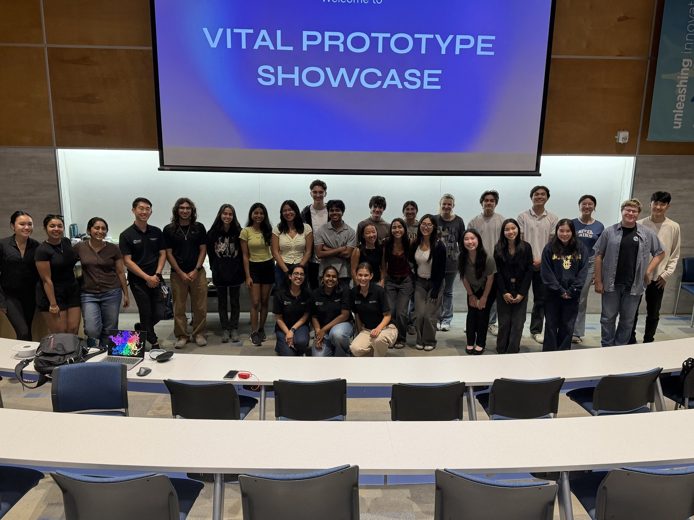

VITAL Prototype Showcase
The finish line. Teams demo a working prototype, walk judges through their design and testing, and make the case for the device they’ve spent the year building.
What happens
VITAL is where the year’s work becomes something you can hold. Teams set up a demo station and present their prototype to judges, faculty, and visitors.
- Demo the physical prototype. Not slides — the actual device, working, in front of people.
- Present your testing data. Show what you validated, what you learned, and where the design changed.
- Face the judges. Where possible we bring back the same judges from earlier events, so they see how far the project came.
- Set up for Nationals. VITAL is the last checkpoint before the National BMES Student Design Competition submission.

What to have ready
Finish fabrication
Get your final print rounds and assembly done with room to spare. Build nights through Spring exist for exactly this.
Run your testing plan
Execute the tests you planned, document the results, and be honest about what didn’t work — judges respect that more than a polished story.
Prepare your demo
Plan how you’ll show the device working in a few minutes, and have a backup if a live demo fails.
Come to office hours
VITAL office hours run the week before. Use them — a dry run in front of coordinators catches problems early.